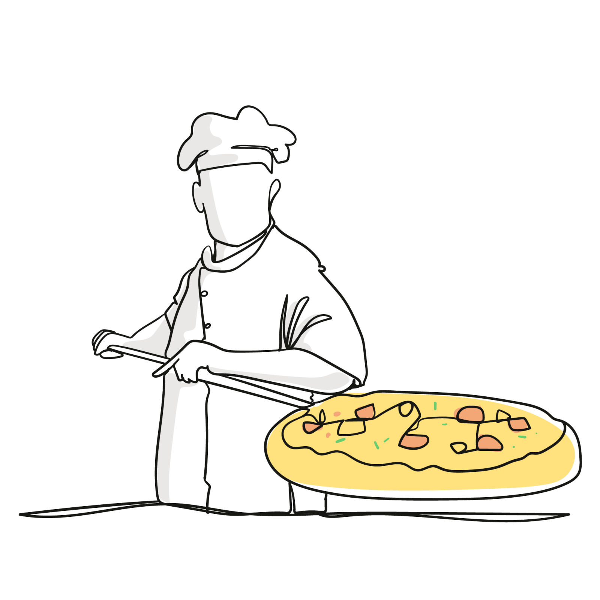
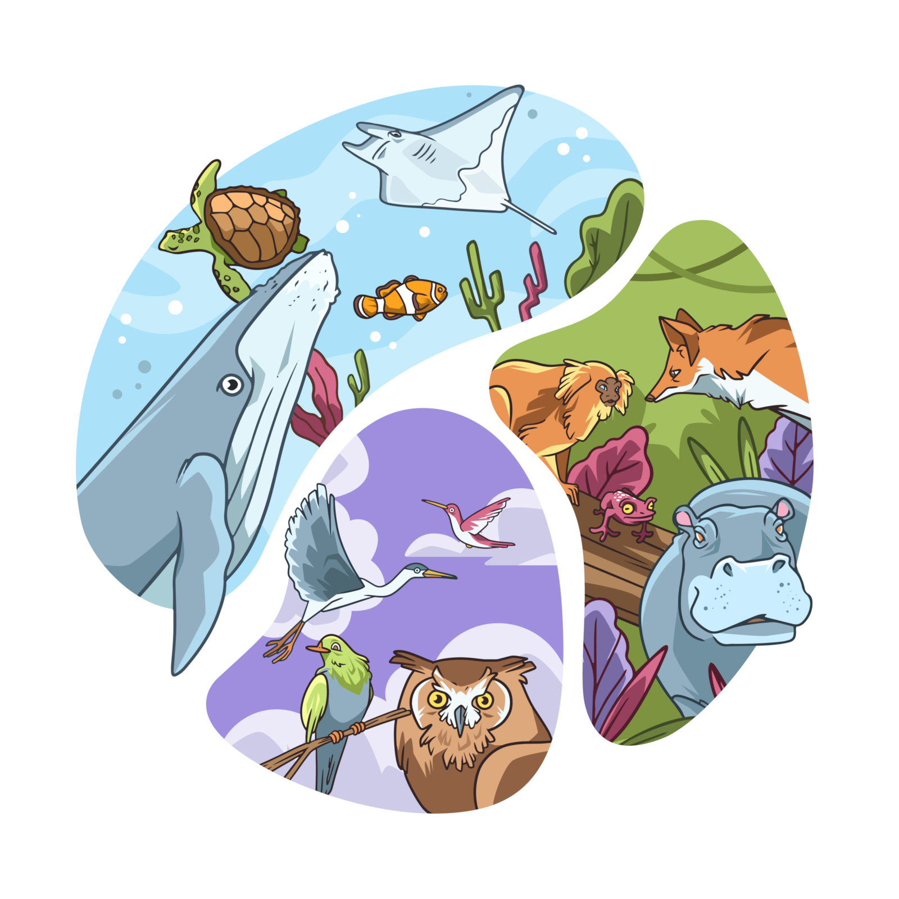

Piter Gomes
Sou bacharel em Ciências Biológicas e mestre em Oceanografia, e atualmente estou em transição para o desenvolvimento de software. Como estudante de Ciência da Computação e aspirante a Desenvolvedor Full-Stack, combino minha formação científica — pensamento analítico, pesquisa e resolução de problemas — com crescente expertise técnica para criar soluções impactantes. Explore meu trabalho, minha história e maneiras de me contatar.
Minhas Skills
HTML5
90%
CSS3
80%
Javascript
75%
Java
80%
Spring Boot
60%
Comunicação
95%
Adaptabilidade
100%
Trabalho em Equipe
95%
Formação
2008 - 2012
Faculdade Souza Marques
Bacharelado em Ciências Biológicas
2014 - 2016
Universidade do Estado do Rio de Janeiro - UERJ
Mestrado em Oceanografia
2023 - 2027
Centro Universitário FAM
Bacharelado em Ciências da Computação
Projetos

2025
Pizzaria Olivetto
Site moderno, responsivo e elegante usando Next.js, TailwindCSS e Vercel, para uma pizzaria artesanal fictícia do Rio de Janeiro.
Saiba mais...
O objetivo foi aprender na prática como estruturar um site moderno, responsivo e elegante usando Next.js, TailwindCSS e Vercel, simulando a presença digital de uma pizzaria fictícia.
- Galeria de imagens em tela cheia com visualização em modal.
- Menu em PDF acessível diretamente no site.
- Formulário de reserva online integrado via Formspree.
- Layout responsivo com navegação por menu "hambúrguer".
- Deploy na Vercel com integração contínua do GitHub.
- Componentes React modulares (Cabeçalho, Hero, Menu, Bebidas, FAQ, Rodapé).
- Otimizado para SEO, acessibilidade e experiência do usuário.
2025
Sistema de Biblioteca
Um sistema de biblioteca desenvolvido em Java e MySQL para praticar Programação Orientada a Objetos, com cadastro de livros, usuários, empréstimos e devoluções. CRUD completo.
Saiba mais...
Este é um projeto de aprendizado em Java que implementa um sistema de biblioteca com persistência em banco de dados MySQL.
Ele foi desenvolvido para praticar os conceitos de Programação Orientada a Objetos (POO), separação de responsabilidades e integração com JDBC.
O sistema roda via console (Scanner) e permite cadastrar livros e usuários, realizar empréstimos e devoluções, além de consultar livros disponíveis e emprestados.
- Criação de CRUD (Create, Read, Update, Delete) para livros e usuários.
- Implementação de regras de negócio.
- Prática de separação de responsabilidades em pacotes.
- Aplicação de conceitos de POO (Programação Orientada a Objetos): encapsulamento, classes de domínio, serviços e interfaces.
2025
Integração Backend e Frontend
Projeto básico e prático de integração back-end (Java) com front-end de interface (HTML5, CSS3 e Javascript).
Saiba mais...
Este projeto consiste em uma aplicação simples de integração entre Frontend (HTML5, CSS3 e JavaScript) e Backend (Java com Spring Boot). O frontend envia e recebe dados do backend por meio de endpoints GET e POST, exibindo respostas diretamente na interface de usuário de forma responsiva e moderna.
A aplicação conta ainda com uma hero image, efeitos de opacidade, botões estilizados, responsividade para dispositivos móveis e um footer com ícones sociais. O backend está hospedado no Render, enquanto o frontend está no Vercel, permitindo uma arquitetura distribuída moderna.
- Backend em Spring Boot com APIs RESTful.
- Frontend consumindo as APIs com requisições fetch e atualizações dinâmicas.
- Envio de formulários com validação e feedback em tempo real.
- Layout responsivo compatível com dispositivos móveis, tablets e desktops.
- Tratamento de erros com mensagens informativas para os usuários.
- Integração "seamless" (perfeita) entre endpoints de backend e componentes frontend.
- Estrutura pronta para deploy e otimizada para plataformas de hospedagem.
2025
Gig-Tracker
Catálogo interativo de bandas, com busca, filtros e integração com Spotify, YouTube e Last.fm. Desenvolvido com JavaScript, HTML5, CSS3.
Saiba mais...
Catálogo interativo das bandas que eu já assisti e que ainda sonho em ver ao vivo! Este projeto pessoal permite explorar, pesquisar, filtrar cards de bandas, com acesso direto ao Spotify e YouTube de cada uma delas.
- Manipulação do DOM, garantia de responsividade e aplicação das melhores práticas de UX/UI com LocalStorage.
- Implementação de busca dinâmica por nome da banda.
- Criação de filtros interativos por gênero e origem.
- Possibilidade de ordenação inteligente por nome, gênero ou país.
- Fornecimento de tema claro/escuro (light/dark) com armazenamento no navegador.
- Adição de acesso direto às bandas no Spotify e YouTube.
- Integração com Last.fm para exibição da atividade de audição atual.

2025
Zoologic
Zoologic é um projeto Java em desenvolvimento que simula um sistema de classificação e gerenciamento de animais vertebrados do filo Chordata.
Saiba mais...
O objetivo é aplicar conceitos de Programação Orientada a Objetos (POO), organização de pacotes, uso de Enums, encapsulamento, herança, polimorfismo e boas práticas de código.
Cada classe animal possui atributos específicos e métodos próprios que sobrescrevem comportamentos comuns da superclasse Chordata.
O sistema permite cadastrar e exibir informações detalhadas sobre diferentes classes de animais:
- Mamíferos
- Aves
- Répteis
- Peixes
- Anfíbios